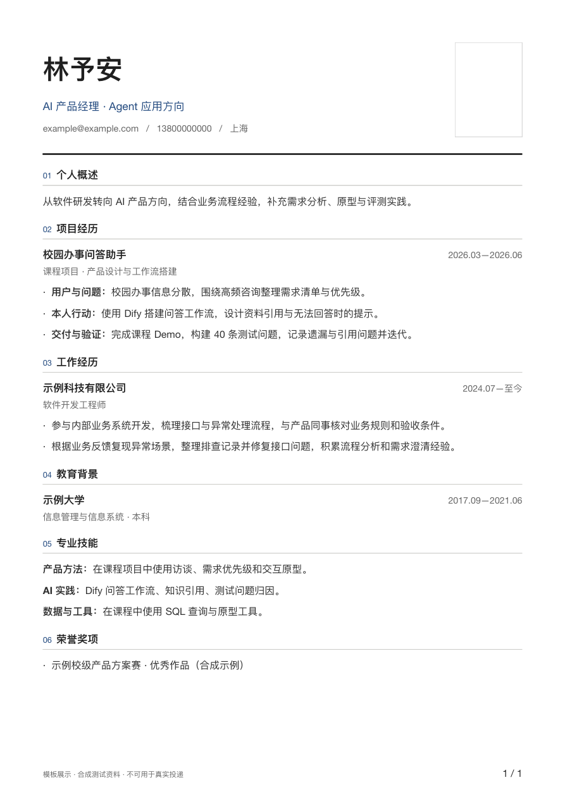
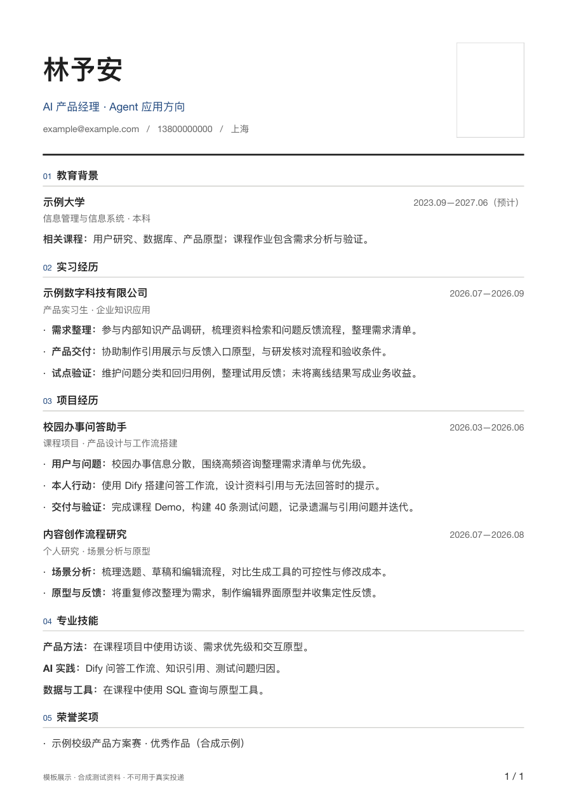

改写前
参与内部知识库问答试点，负责需求分析和项目跟进，协助优化产品体验。
四步标题已经覆盖完整路径。点击任一步，查看操作说明和真实界面。
下载完整 Skill 文件夹，放到宿主支持的技能目录。以 TRAE 项目级安装为例：
.trae/skills/ai-pm-resume/SKILL.md 在 Agent 中输入： 使用 ai-pm-resume 帮我生成 AI 产品经理简历。
有旧简历就直接上传；没有就从教育、工作、实习和项目开始。目标公司、具体职位和 JD 分开填写。
Skill 根据目标岗位决定重点、顺序和详略。你先核对正文，再在 18 款模板中切换当前内容的实际排版。
确认内容和模板后生成 Word、PDF 与全部 PNG。你查看每一页，确认排版、日期、照片和分页后才交付。
差别在于有没有写清任务边界、个人判断和验证方式。以下人物、公司和数字均为合成教学素材。
参与内部知识库问答试点，负责需求分析和项目跟进，协助优化产品体验。
围绕历史客服高频咨询，按可回答、信息不足和歧义三类建立 120 条固定评测问题；定义答案引用与拒答规则，采用同一组问题离线复测，可用回答由 72 条增至 94 条。
Skill 不会补造这些数字。只有原素材里确认过的事实，才能进入成稿；没有指标时就写真实产物、反馈和验证过程。
网申单栏、校招、转岗、资深双页、时间线、双栏与项目型都有对应结构。下面展示 6 款代表模板。






其余模板还包括现代单栏、时间线、留白极简、照片抬头和双栏能力等。
完整包包含工作流、脚本、18 款模板、离线资料页和验证规则。运行环境与模型账户需自行准备。
当前收款码待上传，页面暂不收款；上线时同步补充付款后的领取方式。
解压完整文件夹，放到 TRAE、Claude Code、Cursor、Codex 等宿主支持的技能目录。不同宿主的执行、文件和导出能力不同，安装说明会分别标注。
可以。Skill 会保留你的真实岗位和项目属性，提炼用户问题、业务判断、方案取舍与协作证据，不会把传统经历伪装成已经完成的 AI 项目。
不会。Skill 负责资料核对、岗位定制、内容写作和排版交付，不自动投递，也不承诺任何求职结果。